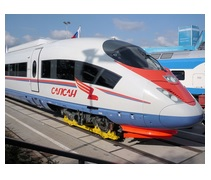
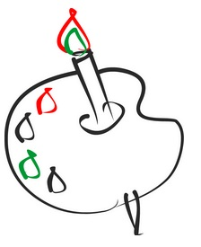

За рулем сижу довольный — Ездить просто и легко! Только руль чуть–чуть огромный И педали далеко.
Мне купили паровозик, Сразу два вагона возит. Я включу его, и он За собой везет вагон. Вот бы мне в нем прокатиться, Только жаль — не поместиться.
Нарисую я в альбоме Голубое море, Белый парус над волною Бьется на просторе.